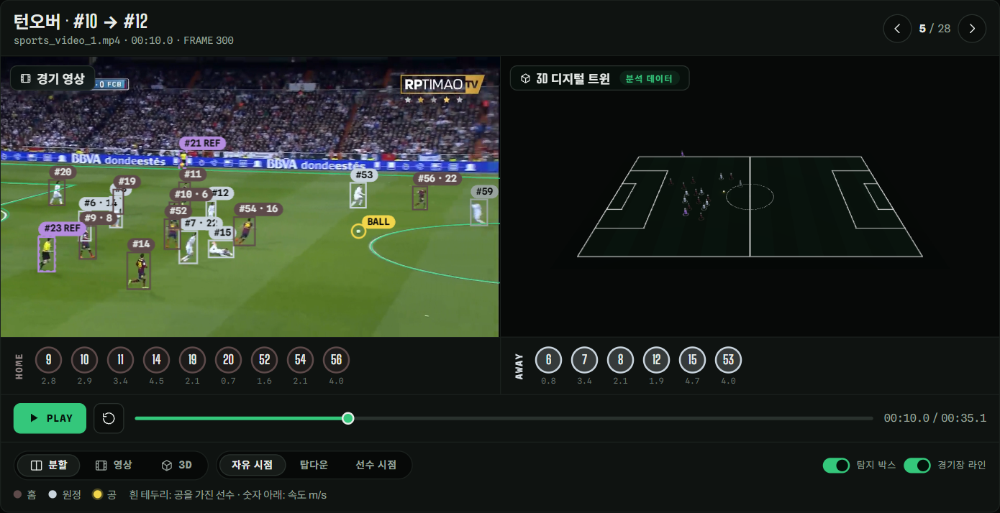
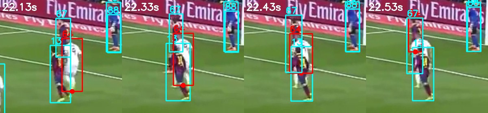
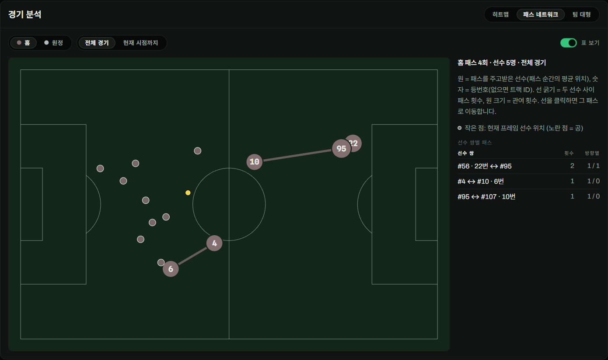
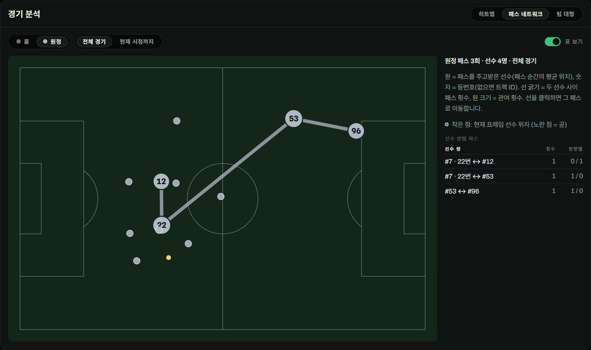
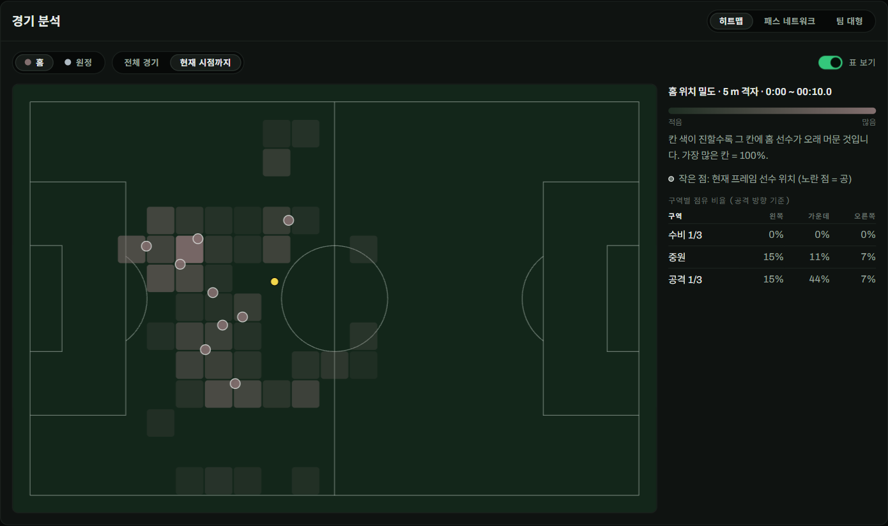
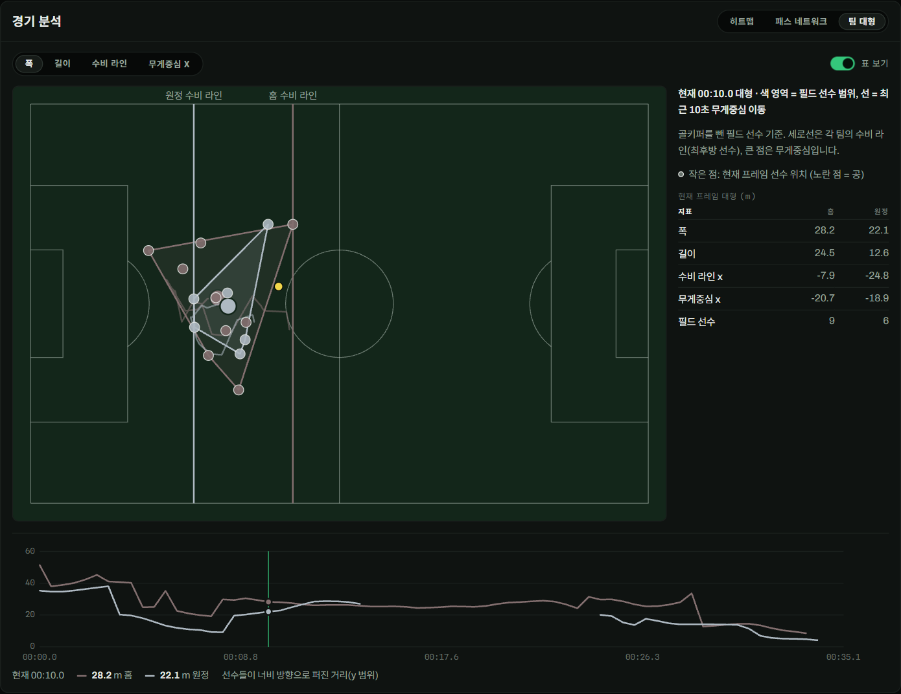

INHA SPORTS TRACKING · 2026.11.26
최종 프로젝트 보고서
축구 중계 영상에서 선수와 공을 추적하고, 픽셀 위치를 경기장 좌표로 변환해 동기화된 3D 장면과 경기 지표로 보여주는 시스템을 구현했다.

검증 대상은 로컬 통합 커밋 385bfef의 A·B·C이다. 해석 엔진 D는 별도 구현과 시험 결과를 6절에 기록했다.
한 대의 움직이는 카메라로 촬영된 영상에서 선수·공의 위치와 팀을 추정하고, 개별 이벤트를 원본 영상에서 찾아볼 수 있도록 했다. 빠른 미리보기와 오프라인 정밀 분석을 제공한다. 이번 실험에는 프레임을 건너뛰지 않는 정밀 모드를 사용했다.
| 단계 | 구현 및 산출물 |
|---|---|
| 탐지 | 960px 파인튜닝 RF-DETR Medium으로 선수·골키퍼·심판·공을 분류한다. 작은 공에는 타일 추론을 추가한다. |
| 추적 및 식별 | BoT-SORT와 공 전용 추적기, SAM3 마스크 및 위험 구간 영상 추적, SigLIP2 팀 분류, GLM-OCR 등번호 연결을 사용한다. |
| 경기장 보정 | 라인과 센터서클에서 호모그래피를 구하고, 키프레임 사이에 보정을 전파해 105×68m 경기장 좌표를 얻는다. |
| 궤적 및 통계 | 칼만·RTS 평활화와 위치 점프 처리 후 이동 거리·스프린트·점유·패스·대형을 계산한다. |
| 서비스 | FastAPI로 영상과 결과를 제공하고 React·Three.js로 영상, 3D 트윈과 통계를 같은 타임라인에 표시한다. |
축구 데이터 372장 중 298장을 학습, 49장을 검증, 25장을 테스트에 사용했다. 저장소 8부의 학습 기록에서 테스트 mAP50은 0.934, mAP50:95는 0.668이었다. 공 클래스 AP50:95는 0.344로 다른 클래스보다 낮았다.
sports_video_1.mp4의 전체 1,054프레임이며 시작과 종료 프레임을 자르지 않았다.이전 저장 실행에서 트랙 64의 22.13~22.73초 구간에 이상값이 나타났다. 18.8초 부근에는 같은 선수의 정상 역습이 있었다. 골문 앞에서 다른 선수에게 가려진 순간 탐지 박스 높이는 131px에서 86px로 줄었고, 박스 하단에서 추정한 발 위치가 0.2초 사이 8.6m 이동했다. 이때 보정 신뢰도는 0.99~1.0이었다. 병합 이력을 기록한 후속 실행에서는 같은 유형의 점프가 병합 없이 발생했다.

평활화 전에 앞뒤 위치의 중앙값을 비교해 물리적으로 과도한 점프를 찾는다. 짧게 벗어났다 돌아오면 측정 가중치를 낮춰 앞뒤 좌표로 보간하고, 복귀하지 않으면 평활화 구간을 나눈다. 공에는 이 필터를 적용하지 않는다.
| 지표 | 이상값 포함 저장본 전 | 저장본 후 | 새 GPU 실행 전 | 새 실행 후 |
|---|---|---|---|---|
| 최고 속력 | 12.31 m/s | 9.44 m/s | 9.35 m/s | 9.35 m/s |
| 순간 최고 속력 | 14.39 m/s | 9.44 m/s | 9.35 m/s | 9.35 m/s |
| 10 m/s 초과 선수 | 1명 | 0명 | 0명 | 0명 |
| 스프린트 | 11회 | 11회 | 11회 | 11회 |
| 총 이동 거리 | 1,460.5 m | 1,441.8 m | 1,468.4 m | 1,458.5 m |
이전 저장본에서는 스프린트 11회가 유지됐다. 새 묶음 실행에서는 9개의 점프 구간과 5개의 평활화 분할을 기록했다. 새 실행의 처리 전 스프린트 11개 중 11개가 같은 트랙의 시간 구간 50% 이상 겹쳤고, 9개는 시작·종료·최고 속력까지 같았다. 두 실행의 전후 표는 각각 같은 검출·보정 결과를 사용했다.
겹치는 위험 구간이 공유하는 프레임의 영상 특징을 한 번 계산해 재사용한다. 두 실행에서 탐지 가중치, 정밀 분석 프로필, 자동 보정 기본값을 동일하게 사용했다.
| 항목 | 사건별 | 묶음 | 변화 |
|---|---|---|---|
| 전체 분석 및 자동 보정 (초) | 741.8 | 709.1 | -4.4% |
| 탐지·추적 (초) | 404.4 | 408.0 | +0.9% |
| 일반 후처리 (초) | 0.1 | 0.2 | +100.0% |
| SAM3 영상 추적 (초) | 222.3 | 197.7 | -11.1% |
| 팀 분류 (초) | 15.4 | 4.1 | -73.4% |
| 등번호와 재연결 (초) | 36.5 | 35.6 | -2.5% |
| 보정 키프레임 탐색 (초) | 43.9 | 44.0 | +0.2% |
| 보정 앵커 추적 (초) | 19.0 | 19.3 | +1.6% |
| GPU 최대 할당량 (GiB) | 5.02 | 6.72 | +33.9% |
이번 한 쌍에서 전체 시간은 -4.4%, SAM3 영상 추적 시간은 -11.1% 변화했다. 표의 전체 시간은 모델 초기화와 보고서용 지표 집계 시간을 제외한 분석·자동 보정 시간이다. 최대 VRAM은 PyTorch 할당량 기준이다.
| 지표 | 사건별 | 묶음 |
|---|---|---|
| 선수 트랙 | 49 | 49 |
| 화면 안 끊김 | 1 | 1 |
| 공이 기록된 프레임 | 1054 | 1054 |
| 등번호 확정 트랙 | 18 | 18 |
| 보정 정상 프레임 비율 (%) | 95.5 | 95.5 |
| 라인 오차 중앙값 (px) | 2.0 | 2.0 |
| SAM3 끊김 이음 / ID 교체 | 2 / 3 | 2 / 3 |
두 전체 실행의 프레임별 박스와 경기장 좌표가 모두 일치했다. 다른 영상의 정확도와 성능 변동은 추가 검증이 필요하다.
묶음 실행 자동 보정에서 1,054프레임에 좌표를 투영했고 972프레임이 보정 신뢰도 기준을 통과했다.
같은 팀으로 공 점유가 이어진 이벤트를 패스로 집계했다. 선수 노드의 위치는 패스 순간 좌표의 평균이며, 연결선에는 두 선수 사이의 방향별 횟수를 표시한다.
| 팀 | 패스 | 노드 | 연결 | 위치 표본 | 팀 대형 표본 |
|---|---|---|---|---|---|
| 홈 | 4 | 5 | 3 | 6171 | 68 |
| 원정 | 3 | 4 | 3 | 3825 | 49 |


| 팀 | 상호작용 | 목표 시각 | 이동 후 영상 시각 |
|---|---|---|---|
| 홈 | 연결선 클릭 | 2.033초 | 2.033초 |
| 원정 | 연결선 클릭 | 11.433초 | 11.433초 |


실제 브라우저에서 영상 시점을 바꾸며 화면 갱신을 확인했다. 누적 패스는 0.5초 구간 단위로 갱신한다. 팀 대형은 10초와 20초에서 표시 시각이 바뀌었다. 저장 통계와 프런트엔드 재계산을 비교해 패스 수·연결·노드, 팀 대형, 히트맵 격자가 표시 정밀도 안에서 일치함을 확인했다.
| 항목 | 확인한 범위 |
|---|---|
| A 속력 | 보고서의 12.31 m/s 이상값이 있던 저장본과 새 전체 영상 실행에 대해 처리 전후 지표를 비교했다. |
| B 성능 | RTX 5070에서 전체 영상의 사건별·묶음 SAM3 실행을 각각 한 번 완료했다. |
| C 화면 | 새 GPU 결과를 앱에 불러와 양 팀 네트워크와 히트맵, 팀 대형을 캡처하고 화면 상호작용을 확인했다. |
| D 해석 엔진 | 등번호를 도구 결과와 대조해 교정하고 근거가 없는 수치를 표시하도록 구현했다. D 브랜치 기록상 테스트 150개가 통과했다. |
D에는 도구 선호출과 생성 길이 상한 조정, 단계별 계측도 들어 있다. 이번 GPU 검증 범위는 A·B·C였다. D의 Qwen3-VL 응답 정확도와 지연 시간은 통합 실측이 남아 있다.
영상 한 편으로 여러 경기나 전·후반 전체의 정확도를 일반화하기는 어렵다. 향후에는 여러 경기에서 수동 주석과 패스·선수 ID·등번호를 대조하고, 동일 조건의 반복 실행으로 처리 시간의 변동 폭을 측정해야 한다. 박스 가려짐이나 장기 ID 혼선은 후처리만으로 완전히 복구하기 어렵다.
기반 8552009, A d87c59a, B 6bf2c98, C 2b35af2를
분리된 검증 작업트리의 385bfef에 통합했다. D 구현 참조는 dd37bdd이다.
sam_batch.json 및 sam_batch.md에 전체 영상의 설정별 측정값을 기록했다.speed-batch.json과 report-baseline-speed.json은 A의 전후 비교 원자료다.views-batch.json과 browser-checks.json은 C의 계산 및 브라우저 검증 결과다.scripts/eval_suite.py run에 --analysis-mode precise --every 0.2와
--variant one:sam_video.batch=false --variant batch:sam_video.batch=true를 사용했다.
scripts/diagnose_speed.py compare로 저장 결과에 대한 A의 효과를 재계산했다.저장소 내부 근거 · 기술 명세 1~10부, A 속력 이상값 보고서 11부, B 성능 보고서 12부, C 분석 화면 보고서 13부, D 답변 검증 보고서 14부.